Bien démarrer en programmation⚓︎
Afficher et entrer une valeur⚓︎
Deux instructions importantes lorsqu’on apprend à programmer en Python :
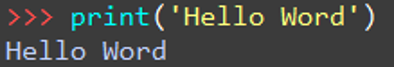
Print(): permet d’afficher quelque chose dans la console
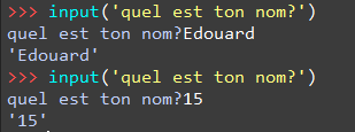
input(): permet de récupérer une entrée au clavier
Les variables⚓︎
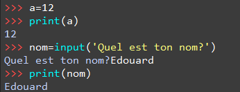Une variable est composée d’un nom (ou identificateur) et d’une valeur enregistrée en mémoire. Le nom utilisé doit être représentatif de son rôle dans le programme.
Attention
Attention à nommer ses variables de façon cohérente. Ne pas appeler age une variable contenant un prénom.
On évite :
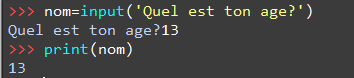
Types de variables⚓︎
Le type d'une variable définit l’ensemble des valeurs qui peuvent lui être affectées ainsi que les opérations et les fonctions utilisables.
On peut utiliser la commande type() pour connaitre le type d’une variable.
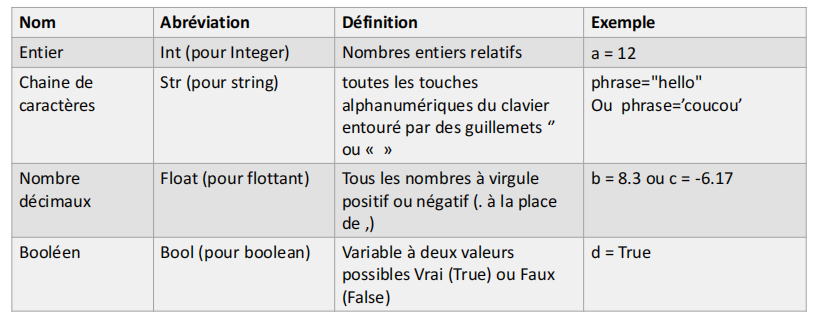
Voici ce que cela donne
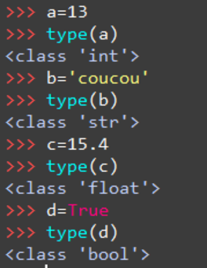
Les instructions⚓︎
Une instruction est une commande qui doit être exécutée par la machine. 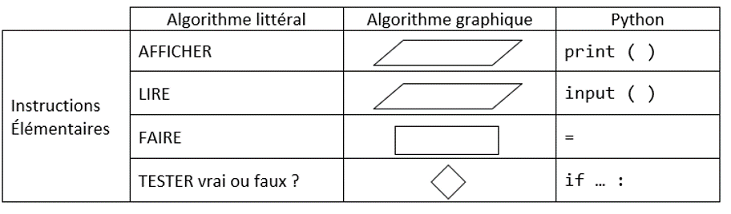
L’instruction FAIRE peut être une affectation ou une expression :
FAIRE y ← 1 affecte 1 à la variable y (déclare la variable si elle n’existe pas en Python uniquement)
FAIRE a = 2+y effectue le calcul 2+y et l’affecte à la variable a
Expressions mathématiques⚓︎
Expressions de base:⚓︎
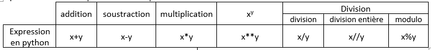
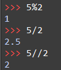
Modulo : reste de la division
Division entière : quotient de la division
Calcul sur les chaines de caractères :
La concaténation est interprétable entre deux variables de type string.
‘infor’+’matique’ donnera le résultat ‘informatique’.
La multiplication * est une concaténation d’une même variable répétée plusieurs fois. "info"*3=’infoinfoinfo’
Les booléens :⚓︎
Les booléens permettent de faire des comparaisons
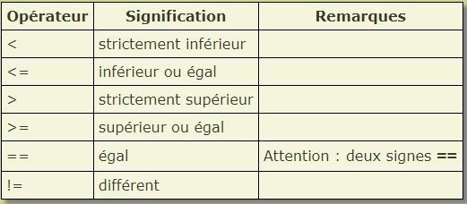 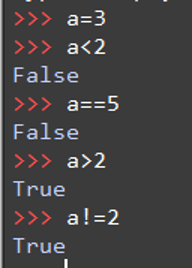
Autres opérations mathématiques :⚓︎
Si cela ne suffit pas, il faut utiliser le module math qui contient les autres opérations. Cependant il n'est pas disponible d'office, il faut l'importer.
1 | |
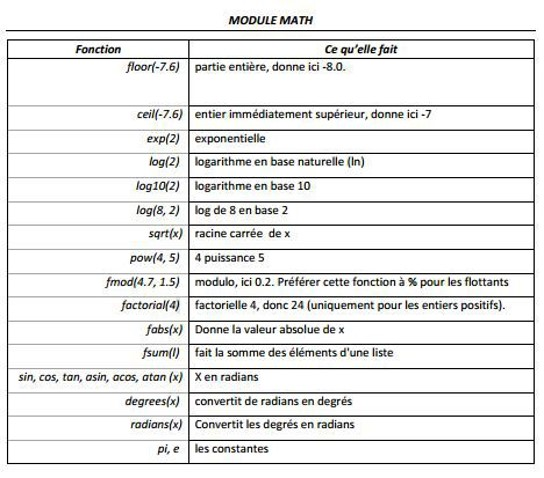